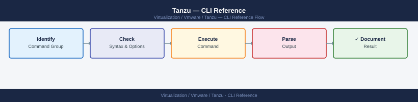

Tanzu — CLI Reference¶

Before you begin¶
- Access: vCenter read-only minimum; Administrator role for remediation steps
- Timing: safe to run during business hours unless a step is marked ⚠ (causes interruption)
- Dependencies: no active upgrades or migrations on the same infrastructure
- Logging: capture command output — paste into the change record on completion
tanzu CLI¶
# Install tanzu CLI (Linux)
curl -sL https://github.com/vmware-tanzu/tanzu-framework/releases/download/v<version>/tanzu-linux-amd64.tar.gz | tar xz
sudo install tanzu /usr/local/bin/tanzu
# Install required plugins
tanzu plugin sync
# Check version
tanzu version
tanzu plugin list
tanzu version v1.6.1
buildDate: 2024-01-15
sha: a1b2c3d4e5f6g7h8i9j0k1l2m3n4o5p6
gitCommit: abc123def456ghi789jkl012mno345pqr
Checking for required plugins...
Installing plugin 'cluster' (v1.6.1)...
Installing plugin 'management-cluster' (v1.6.1)...
Installing plugin 'package' (v1.6.1)...
Installing plugin 'secret' (v1.6.1)...
Plugins synced successfully
NAME DESCRIPTION SCOPE DISCOVERY STATUS
cluster Kubernetes cluster operations Standalone default installed
management-cluster Manage Tanzu management clusters Standalone default installed
package Tanzu package management Standalone default installed
secret Manage secrets for Tanzu Standalone default installed
Common errors
curl: (22) HTTP error 404 Not Found — Verify the correct version number exists on the GitHub releases page and update the URL accordingly.
sudo: install: command not found — Install coreutils package with sudo apt-get install coreutils (Debian/Ubuntu) or sudo yum install coreutils (RHEL/CentOS).
Error: failed to sync plugins: unable to connect to discovery source — Ensure internet connectivity and that GitHub is accessible, or configure an offline plugin repository if air-gapped.
Tanzu Cluster Operations¶
# List management clusters
tanzu management-cluster get
# Create a workload cluster (from cluster config YAML)
tanzu cluster create my-workload-cluster --file cluster-config.yaml
# List workload clusters
tanzu cluster list --include-management-cluster
# Get cluster details
tanzu cluster get my-workload-cluster
# Get kubeconfig for a workload cluster
tanzu cluster kubeconfig get my-workload-cluster --admin
# Writes kubeconfig to ~/.kube/config (or merge with KUBECONFIG env var)
# Scale worker nodes
tanzu cluster scale my-workload-cluster --worker-machine-count 5
# Upgrade a workload cluster
tanzu cluster upgrade my-workload-cluster
# Delete a workload cluster
tanzu cluster delete my-workload-cluster --yes
NAME STATUS ROLES KUBERNETES VERSION
tkg-mgmt-cluster-prod running control-plane,worker v1.27.5
Validating configuration...
Creating workload cluster 'my-workload-cluster'...
Waiting for cluster to be ready (this may take 10-15 minutes)...
Cluster created successfully with UUID: a7f3c2e1-9b4d-47e2-8c1a-5d6f9e2b3c4a
NAME STATUS ROLES KUBERNETES VERSION
my-workload-cluster running control-plane,worker v1.27.5
tkg-mgmt-cluster-prod running control-plane,worker v1.27.5
NAME NAMESPACE STATUS KUBERNETES VERSION ROLES
my-workload-cluster tkg-system running v1.27.5 control-plane,worker
Retrieving kubeconfig for cluster 'my-workload-cluster'...
Kubeconfig written to /home/admin/.kube/config
Scaling worker nodes to 5...
Cluster 'my-workload-cluster' scaled successfully.
Current worker node count: 5
Checking for available upgrades...
Upgrading cluster to v1.27.6...
Upgrade in progress. This may take 15-20 minutes...
Cluster upgraded successfully.
Deleting cluster 'my-workload-cluster'...
Cluster deletion initiated. UUID: a7f3c2e1-9b4d-47e2-8c1a-5d6f9e2b3c4a
Common errors
Error: cluster-config.yaml: no such file or directory — Verify the YAML file path is correct and exists in the current working directory before running tanzu cluster create.
Error: cluster 'my-workload-cluster' not found — Ensure the cluster name matches exactly (case-sensitive) and the cluster has finished provisioning by checking tanzu cluster list first.
Error: unable to write kubeconfig: permission denied — Run mkdir -p ~/.kube and ensure write permissions on the ~/.kube directory, or set KUBECONFIG to a writable path.
kubectl for Supervisor (vSphere with Tanzu)¶
# Login to Supervisor cluster
kubectl vsphere login \
--server https://supervisor.example.local \
--username administrator@vsphere.local \
--vsphere-username administrator@vsphere.local \
--insecure-skip-tls-verify
# List Supervisor namespaces (vSphere Namespaces)
kubectl get namespaces
# Switch context to a Supervisor namespace
kubectl config use-context <namespace>
# List TanzuKubernetesCluster objects in a Supervisor namespace
kubectl get tanzukubernetescluster -n <namespace>
# Deploy a TKG cluster via CRD
kubectl apply -f tkc-cluster.yaml
Logged in successfully to https://supervisor.example.local
You have access to the following contexts:
supervisor.example.local
supervisor.example.local/administrator@vsphere.local
The current context is now "supervisor.example.local"
NAME STATUS AGE
default Active 45d
tkc-prod Active 32d
tkc-staging Active 28d
tkc-dev Active 15d
Switched to context "supervisor.example.local/tkc-prod"
NAME STATUS READY AGE VERSION
tkg-cluster-prod-01 Ready 3/3 42d v1.27.5
tkg-cluster-prod-02 Ready 3/3 38d v1.27.5
tkg-cluster-staging-01 Updating 2/3 8d v1.28.1
tanzukubernetescluster.run.tanzu.vmware.com/tkg-prod-03 created
Common errors
error: You must be logged in to the cluster (Unauthorized) — Run kubectl vsphere login with correct --server URL and valid vSphere credentials.
error: Unable to connect to the server: dial tcp: lookup supervisor.example.local on [IP]: no such host — Verify the Supervisor cluster FQDN is resolvable and accessible from your network; check DNS or add an entry to /etc/hosts.
error: the server has asked for the client to provide credentials — Add --insecure-skip-tls-verify flag or ensure your vCenter's SSL certificate is trusted by your system's certificate store.
kubectl Workload Cluster Operations¶
# Switch context to a workload cluster
kubectl config use-context <workload-cluster-context>
# Get cluster nodes and status
kubectl get nodes -o wide
# Get all pods across all namespaces
kubectl get pods -A
# Check node resource usage (requires metrics-server)
kubectl top nodes
kubectl top pods -A
# Get events sorted by timestamp (useful for debugging)
kubectl get events -A --sort-by='.lastTimestamp'
# Drain a node for maintenance
kubectl drain <node-name> --ignore-daemonsets --delete-emptydir-data
# Uncordon after maintenance
kubectl uncordon <node-name>
Expected outputSwitched to context "wdc-prod-01".
NAME STATUS ROLES AGE VERSION INTERNAL-IP EXTERNAL-IP OS-IMAGE
wdc-prod-01-control-plane-1 Ready control-plane 45d v1.27.8+vmware.1 10.20.15.42 <none> VMware Photon OS/Linux
wdc-prod-01-worker-node-1 Ready <none> 45d v1.27.8+vmware.1 10.20.15.43 <none> VMware Photon OS/Linux
wdc-prod-01-worker-node-2 Ready <none> 44d v1.27.8+vmware.1 10.20.15.44 <none> VMware Photon OS/Linux
wdc-prod-01-worker-node-3 Ready <none> 42d v1.27.8+vmware.1 10.20.15.45 <none> VMware Photon OS/Linux
NAMESPACE NAME READY STATUS RESTARTS AGE
kube-system coredns-558bd4d5db-2kxvf 1/1 Running 2 45d
kube-system etcd-wdc-prod-01-control-plane-1 1/1 Running 1 45d
kube-system kube-apiserver-wdc-prod-01-cp-1 1/1 Running 3 45d
tanzu-system-auth dex-5f7c8b9d2-lmn4p 1/1 Running 0 12d
tanzu-system-auth pinniped-post-deploy-job-abc123 0/1 Completed 0 12d
...
NAME CPU(m) MEMORY(Mi)
wdc-prod-01-control-plane-1 487 2156
wdc-prod-01-worker-node-1 234 1842
wdc-prod-01-worker-node-2 156 1623
wdc-prod-01-worker-node-3 89 1401
NAME CPU(m) MEMORY(Mi) NODE
coredns-558bd4d5db-2kxvf 12 45 wdc-prod-01-control-plane-1
kube-apiserver-wdc-prod-01-cp-1 156 512 wdc-prod-01-control-plane-1
etcd-wdc-prod-01-control-plane-1 78 234 wdc-prod-01-control-plane-1
...
NAMESPACE LAST SEEN TYPE REASON OBJECT
kube-system 2m Normal NodeHasSufficientDisk node/wdc-prod-01-worker-node-2
kube-system 5m Warning MemoryPressure node/wdc-prod-01-worker-node-1
kube-system 8m Normal NodeReady node/wdc-prod-01-worker-node-3
node/wdc-prod-01-worker-node-1 cordoned
evicting pod kube-system/calico
¶
Switched to context "wdc-prod-01".
NAME STATUS ROLES AGE VERSION INTERNAL-IP EXTERNAL-IP OS-IMAGE
wdc-prod-01-control-plane-1 Ready control-plane 45d v1.27.8+vmware.1 10.20.15.42 <none> VMware Photon OS/Linux
wdc-prod-01-worker-node-1 Ready <none> 45d v1.27.8+vmware.1 10.20.15.43 <none> VMware Photon OS/Linux
wdc-prod-01-worker-node-2 Ready <none> 44d v1.27.8+vmware.1 10.20.15.44 <none> VMware Photon OS/Linux
wdc-prod-01-worker-node-3 Ready <none> 42d v1.27.8+vmware.1 10.20.15.45 <none> VMware Photon OS/Linux
NAMESPACE NAME READY STATUS RESTARTS AGE
kube-system coredns-558bd4d5db-2kxvf 1/1 Running 2 45d
kube-system etcd-wdc-prod-01-control-plane-1 1/1 Running 1 45d
kube-system kube-apiserver-wdc-prod-01-cp-1 1/1 Running 3 45d
tanzu-system-auth dex-5f7c8b9d2-lmn4p 1/1 Running 0 12d
tanzu-system-auth pinniped-post-deploy-job-abc123 0/1 Completed 0 12d
...
NAME CPU(m) MEMORY(Mi)
wdc-prod-01-control-plane-1 487 2156
wdc-prod-01-worker-node-1 234 1842
wdc-prod-01-worker-node-2 156 1623
wdc-prod-01-worker-node-3 89 1401
NAME CPU(m) MEMORY(Mi) NODE
coredns-558bd4d5db-2kxvf 12 45 wdc-prod-01-control-plane-1
kube-apiserver-wdc-prod-01-cp-1 156 512 wdc-prod-01-control-plane-1
etcd-wdc-prod-01-control-plane-1 78 234 wdc-prod-01-control-plane-1
...
NAMESPACE LAST SEEN TYPE REASON OBJECT
kube-system 2m Normal NodeHasSufficientDisk node/wdc-prod-01-worker-node-2
kube-system 5m Warning MemoryPressure node/wdc-prod-01-worker-node-1
kube-system 8m Normal NodeReady node/wdc-prod-01-worker-node-3
node/wdc-prod-01-worker-node-1 cordoned
evicting pod kube-system/calico
Carvel Tools (used by Tanzu)¶
# kapp — deploy and track application resources
kapp deploy -a my-app -f ./manifests/ --yes
kapp list
kapp delete -a my-app --yes
# ytt — YAML templating
ytt -f values.yaml -f config/ > rendered.yaml
# imgpkg — package and relocate container images
imgpkg push -b harbor.example.local/tanzu/my-bundle:v1.0 -f ./bundle/
imgpkg pull -b harbor.example.local/tanzu/my-bundle:v1.0 -o ./output/
# vendir — sync external content
vendir sync
Target cluster 'https://10.20.30.40:6443' (ns: default)
Changes
Create ServiceAccount/my-app
Create Deployment/my-app
Create Service/my-app
Create ConfigMap/my-app-config
5 resources added, 0 resources updated, 0 resources deleted
Apps in namespace 'default':
Name Namespaces Statuses Ages
my-app default Reconcile ok 2s
Target cluster 'https://10.20.30.40:6443' (ns: default)
Changes
Delete ServiceAccount/my-app
Delete Deployment/my-app
Delete Service/my-app
Delete ConfigMap/my-app-config
5 resources deleted
Rendering ytt templates...
config/values.yaml
config/deployment.yaml
config/service.yaml
Rendered 3 files to rendered.yaml
Pushing bundle 'harbor.example.local/tanzu/my-bundle:v1.0'...
Pushed 12 image layers (847.3 MB total)
Pushed bundle successfully
Pulling bundle 'harbor.example.local/tanzu/my-bundle:v1.0'...
Pulled 12 image layers (847.3 MB total)
Extracted to ./output/
Syncing vendir directories...
config/upstream/ (git)
vendor/charts/ (helm)
Synced 2 directories successfully
Common errors
Error: kapp: Error: Unauthorized (401). Unauthorized — Verify kubeconfig is set correctly with export KUBECONFIG=/path/to/config and cluster credentials are valid.
Error: imgpkg: Error: Pushing image layer: UNAUTHORIZED: authentication required — Authenticate to the container registry with docker login harbor.example.local before pushing.
Error: vendir: Error: Syncing 'config/upstream': git clone failed: repository not found — Verify the git repository URL in vendir.yml is correct and accessible from the cluster network.
Harbor CLI¶
# Push an image to Harbor
docker login harbor.example.local -u admin -p <password>
docker tag myapp:v1.0 harbor.example.local/myproject/myapp:v1.0
docker push harbor.example.local/myproject/myapp:v1.0
# Pull an image
docker pull harbor.example.local/myproject/myapp:v1.0
# Harbor API — list projects
curl -sk -u admin:<password> \
"https://harbor.example.local/api/v2.0/projects" | python3 -m json.tool
# Harbor API — list repositories in a project
curl -sk -u admin:<password> \
"https://harbor.example.local/api/v2.0/projects/myproject/repositories" | python3 -m json.tool
Login Succeeded
v1.0: digest: sha256:a1b2c3d4e5f6g7h8i9j0k1l2m3n4o5p6q7r8s9t0 size: 2048
The push refers to repository [harbor.example.local/myproject/myapp]
v1.0: digest: sha256:a1b2c3d4e5f6g7h8i9j0k1l2m3n4o5p6q7r8s9t0 size: 2048
Pulling from myproject/myapp
Digest: sha256:a1b2c3d4e5f6g7h8i9j0k1l2m3n4o5p6q7r8s9t0
Status: Downloaded newer image for harbor.example.local/myproject/myapp:v1.0
[
{
"project_id": 1,
"name": "myproject",
"registry_id": 0,
"creation_time": "2024-01-15T10:23:45.123456Z",
"update_time": "2024-01-15T10:23:45.123456Z"
},
{
"project_id": 2,
"name": "library",
"registry_id": 0,
"creation_time": "2024-01-10T08:12:30.654321Z",
"update_time": "2024-01-10T08:12:30.654321Z"
}
]
[
{
"id": 5,
"project_id": 1,
"name": "myapp",
"description": "",
"artifact_count": 3,
"creation_time": "2024-01-15T10:24:12.789012Z",
"update_time": "2024-01-15T10:24:12.789012Z"
}
]
Common errors
Error response from daemon: Get "https://harbor.example.local/v2/": x509: certificate signed by unknown authority — Add --insecure-registry harbor.example.local to Docker daemon config or use a valid CA-signed certificate for Harbor.
401 Unauthorized — Verify the admin password is correct and the user has API access permissions in Harbor.
Error response from daemon: pull access denied for harbor.example.local/myproject/myapp, repository does not exist or may require 'docker login' — Ensure the image was successfully pushed and the project/repository name matches exactly (case-sensitive).
Velero CLI (Backup)¶
# List backups
velero backup get
# Create on-demand backup
velero backup create my-backup --include-namespaces production
# List restores
velero restore get
# Restore from backup
velero restore create --from-backup my-backup
# Check Velero status
velero version
kubectl get pods -n velero
NAME STATUS ERRORS WARNINGS CREATED EXPIRES STORAGE LOCATION SELECTOR
my-backup Completed 0 0 2024-01-15T10:23:45Z 29d default <none>
daily-jan14 Completed 0 0 2024-01-14T02:00:12Z 28d default <none>
weekly-jan08 Completed 0 2 2024-01-08T23:15:33Z 22d default <none>
Backup request "my-backup" submitted successfully.
Watch progress by running `velero backup logs my-backup -f`
NAME BACKUP STATUS STARTED COMPLETED ERRORS WARNINGS
my-backup-20240115-102345 my-backup Completed 2024-01-15T10:23:50Z 2024-01-15T10:28:12Z 0 0
Restore request "my-backup-20240115-102345" submitted successfully.
Watch progress by running `velero restore logs my-backup-20240115-102345 -f`
Client:
Version: v1.12.1
Git commit: a1b2c3d4e5f6g7h8
Server:
Version: v1.12.1
Git commit: a1b2c3d4e5f6g7h8
NAME READY STATUS RESTARTS AGE
velero-7d4f8c9b2e1a6-9k8xm 1/1 Running 0 42d
velero-restic-4m2n9p-8l5kj 1/1 Running 0 42d
velero-restic-7x3q2r-9m6lk 1/1 Running 0 42d
Common errors
Error: backup storage location is not available — Verify the S3/storage backend is accessible and credentials are configured with velero backup-location get.
Error: namespace "production" not found — Ensure the namespace exists on the cluster before creating the backup, or remove the --include-namespaces flag to back up all namespaces.
error: the server doesn't have a resource type "backups" — Install or reinstall Velero CRDs with velero install or kubectl apply -f velero-crds.yaml.
See also¶
Verify¶
- Alarms: vSphere Client → Home → Alarms — no new critical alarms after the operation
- Events: monitor the vCenter Events view for the affected object for 5 minutes
- Health check: run the morning health-check sequence for the affected product tier